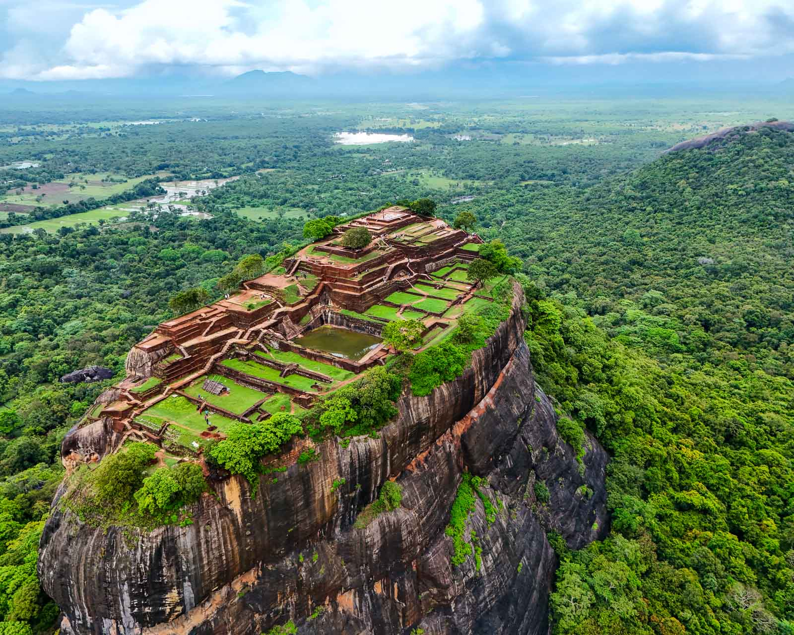
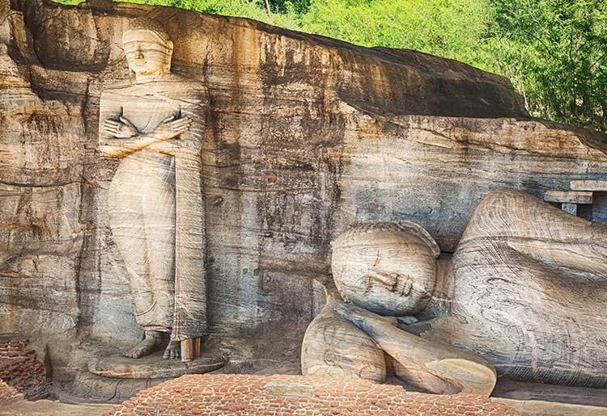
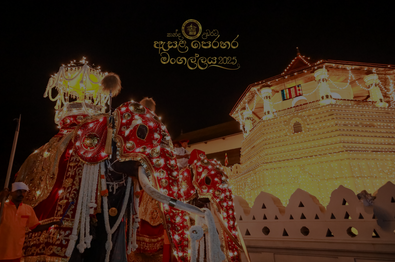
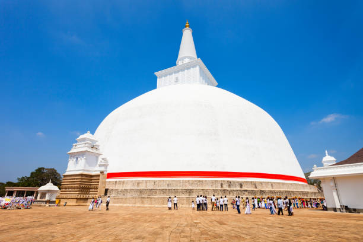
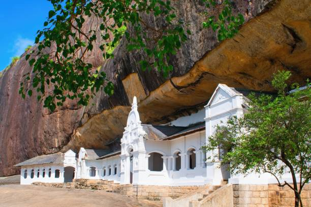

Sri Lanka — where ancient stupas still rise above the jungle, sacred relics are carried in golden processions, and rock fortresses tell stories older than most civilizations on Earth.
Sri Lanka's cultural heritage is not preserved in museums — it is alive. Monks chant ancient Pali texts in cave temples, dancers perform rituals that are centuries old, and massive dagobas built before the Roman Empire still draw pilgrims today. Eight UNESCO World Heritage Sites in a country the size of West Virginia tell one of the richest, most continuous stories of human achievement in Asia.
Mahinda Thero converts King Devanampiya Tissa. The sacred Bo Tree is planted in Anuradhapura — it is still alive today, the oldest documented tree in the world.
Giant stupas (Ruwanwelisaya, Jetavanaramaya), sophisticated irrigation systems, and royal palaces turn the dry zone into one of the most advanced hydraulic civilizations of the ancient world.
King Kashyapa builds a palace fortress on a 200-meter rock, decorated with world-famous frescoes. Today it is called the “Eighth Wonder of the Ancient World”.
Parakramabahu the Great creates a second golden age. The magnificent Gal Vihara rock carvings remain among the finest Buddha images ever created.
The Sacred Tooth Relic becomes the symbol of sovereignty. Later, Dutch and British forts (most famously Galle) blend European and Sri Lankan architecture.





